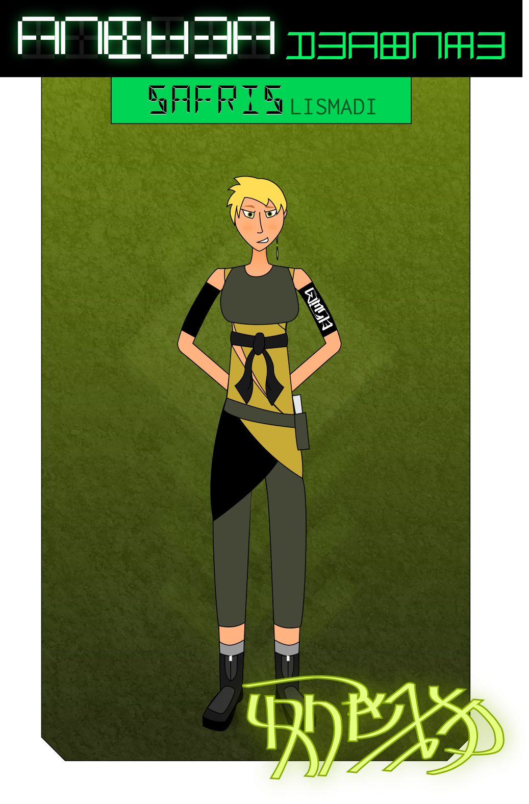

“Have you come to a decision?”
Cassil didn’t move from the cramped bunk in her cell. “I want to say goodbye.”
The mediator raised an eyebrow. “Sorry?”
“You want to send me to the Empire, fine. I’ll only go if you’ll let me have a few more days with my—” Cassil hesitated, eyeing Seruan carefully. “With my friends.”
Seruan smiled and inclined her head. “Of course. We’re not going to pack you right off to a transit ship from a holding facility. You’ll have time to get everything in order before you leave, I promise.”
“And when I leave — I leave on my own terms, right?” Cassil sat up, glowering at Seruan. “I get to wear my own clothes. I get to bring my own things. I get to walk out of the commune a free woman. Nobody drags me away in handcuffs this time.”
“Naturally. We’re not barbarians, Cassil.”
Cassil exhaled. “Fine. It’s a deal.”
Seruan smiled. She knelt down and took Cassil’s hand. “Thank you for giving this a try. I just want to remind you that whenever you choose to return, you’ll be a top candidate for a number of administrative apprenticeships. We need people like you, okay?”
“You’re trying to make this not feel like a punishment.”
Seruan shook her head. “I know it feels that way. I am genuinely sorry for that, Cassil. I know there’s nothing I can say that will make this feel… clean and right to you. I wish there was.”
“Whatever.” Cassil shrugged.
Seruan squeezed her hand and patted her on the shoulder. “Come on. It’s time to get you back to Tegvar.”
“Where the fuck are we, anyway?”
“Officially, that’s classified,” said Seruan breezily.
Cassil sighed. “Figured.”
“Unofficially,” Seruan added with a faint smile, “we’re in a core-line depot annex assigned to the Shevran. That’s where we keep most of our offices. It’s hidden, it’s safe — if Imperial nukes started falling or even if the Echoes glassed the planet, we’d be completely unscathed down here, and we’d have an evac route ready.”
Cassil blinked.
“That sounded like really sensitive information.”
“The positions I said you’d be desirable for weren’t all Civil Service,” said Seruan. “So I’m willing to let protocol slip a bit. Besides, one of us has to trust the other — if you won’t trust me, I have to trust you.”
Cassil stared. “You’re fucking me. You bag me for sedition and then you want to recruit me to the secret loyalty police? Where is the logic to any of this?”
“I’d like you to think about that question,” said Seruan. “I think, in good time, you’ll be able to answer it yourself.”
“This all feels like you’re trying to fuck with my head.”
“True enough,” agreed Seruan. “But I’m only trying to expand your perspectives, not brainwash you.” She flicked her fingers past the door sensor and it slid back soundlessly. “Follow me, please.”
“Not going to hood me this time?”
“Like I said, one of us has to start trusting the other.”
The hallway was dark, lined with rows of other cells — or meeting rooms, or storage closets, it was impossible to tell. The rantalar were bright, open, filled with fresh air and trees and birdsong. Not like this at all. This place felt alien. Cold. Hard. Sterile.
Oppressive.
“I’m going to take you to outprocessing and confirm your release paperwork. From there you’ll be escorted to a waiting room while rail transit is arranged.”
“How far away are we? Or is that classified too?”
“About an hour,” Seruan replied. “And yes, it is.”
“And can I get my clothes back?”
“They’ll be returned as soon as you clear outprocessing.” Seruan punched a code into a heavy blast door, which clattered open, leading to a small room beyond. Security guards glanced at them as they entered and the door slammed behind them, and Seruan took Cassil by the arm, nodding at the guards. “She’s with me.”
“Understood, ma’am.”
Cassil shivered as she realized just how totally isolated the Shevran annex was. Nobody could ever have escaped from this place. Nobody could break in to rescue her even if they knew where she was.
She had never felt so small and alone.
“Mediator Seruan.” The clerk behind the desk rose and bowed. “I await your command.”
“Detainee release,” said Seruan, patting Cassil on the shoulder. Cassil flinched. “To her rantal of origin.”
“Yes, ma’am.” The clerk turned to Cassil. “We’re going to scan you to confirm your identity, alright?”
Cassil nodded mutely. The clerk motion to one of the guards, who unholstered a reader plate from her belt and approached.
“Hands on your head, back straight,” she told Cassil, her voice gentle but firm, putting a gloved hand on her abdomen. Cassil bit her lip and obeyed. She felt cold metal on the nape of her neck, heard the distinctive chirp of the identichip reader, and the guard stepped back.
The clerk glanced at her screen, then back to Cassil. “Can you please confirm your name and citizen identifier, ma’am?”
“Um.” Cassil looked frantically at Seruan. “Is—is something wrong? Is my chip—?”
“Everything is fine, love,” said the clerk kindly. “It’s just standard protocol is all. It’s alright if you don’t know your citizen identifier by memory, it just would mean we’d need to hold you a bit longer for biometric verification.”
“I— Cassil. Cassil Tegvari. ID, um, seven-oh-seven-fifteen-four-eight-ten. I'm, um, I'm still a ward, if it matters, not a citizen.”
The clerk nodded. “Everything’s in order, then. Please, have a seat.”
“You can put your arms down now,” Seruan murmured. Cassil flushed with embarassment and dropped her arms to her sides.
The clerk waited for them to be seated and then turned to Seruan. “Mediator Seruan, can you confirm the release order?” A small screen lit up next to the mediator. Seruan scrutinized it for a moment before nodding and typing in a passphrase.
“Since this is an unconditional release into the civilian population,” the clerk continued, “we are going to have to run the detainee’s records by Tel Casran before we can clear her for final departure—”
“Unconditional?” Cassil interrupted, looking at Seruan. “I thought—”
“It’s an informal arrangement,” Seruan said. “You’re being restored to your status as a free citizen — well, ward; just one with… expectations.”
“…I didn’t think anyone here did ‘informal.’”
The clerk cleared her throat. “However,” she continued, “it shouldn’t take longer than twenty minutes or so for the buoy to jump through with the reply from Tel Casran, and Cassil can wait in the departure lounge while that’s running.”
“Understood,” said Seruan.
“I don’t foresee there being any issues. Injunctions from the Capital are mostly just a safety measure to keep high-level prisoners from being sprung accidentally. But, as you know, procedure.” The clerk clicked a few keys on her keyboard. “Comrade, the record shows here you were brought in with a number of personal effects. Would you like them returned to you before departure? We can also have them shipped at a later date or simply recycled if that would be more convenient to you.”
“I… yeah,” Cassil mumbled. “I’d like them back now.”
“Of course.” The clerk rapped the enter key a few times. “I’ve ordered a railcar diverted for transit to Rantal Tegvar. The tracks should be clear for departure within the hour.” She looked at Seruan. “That’s all I need, apart from the exit interview.”
Seruan stood quickly. “Of course. Thank you.” She turned to Cassil. “This is where we say goodbye. If you want to contact me after you’ve been released to discuss our arrangement, I’ll be listed in your direct-messaging contacts from now on. I hope your ride back to Tegvar is pleasant.” She bowed.
Cassil had to stop herself from returning the gesture. She looked away as Seruan left the room.
“Comrade Cassil,” said the clerk gently. “I have a few questions I need to ask you. You aren’t obligated to answer any of them, however, it may be in your personal interest to.”
Cassil shrugged. “Okay.”
“Did you experience any bodily injury or harm during your arrest and detention?”
“No.”
“Did you feel detaining personnel were physically cruel in any way?”
Cassil shrugged again. “Not really, I guess.”
“Were you at any point subject to inappropriate physical contact or any other form of sexual assault?”
“What? No!” Cassil exclaimed. “Does that happen here?”
“This is part of how we make sure it doesn’t,” said the clerk. “Were you given adequate rations? —‘Adequate’ means ‘we didn’t starve you,’” she added, before Cassil could reply.
“I guess.”
“Alright. That’s all I need from you. Please go ahead and enter your personal passphrase on the screen to confirm that I’ve recorded your answers faithfully.”
Cassil tapped at the screen idly. “So is that it? I’m just free to go now?”
“Security will escort you to the depot and back to Rantal Tegvar when the train arrives. After that, yes. No restrictions have been ordered on your movement, labor assignments, or network access.”
The clerk tapped enter again and Cassil’s screen went dark. “Security,” she called, “we’re finished here.”
“I’m afraid we’re going to need to hood you and cuff you until we’ve reached the depot,” said one of the guards, gently touching Cassil’s arm. “This is a very high-security facility and even though you’re being released—”
“Yeah, fine, I get it.” Cassil shuddered. “Just get it over with.”
Her wrists were fastened behind her back and a soundproof hood came down around her head, cinched around the neck. The guards took her by the upper arms to guide her out of the annex. Her eyes and ears locked away, Cassil felt completely helpless, not even able to hear her own footsteps. The sensation was— She didn't like it. It was awful and humiliating and she couldn't get over the way it made her feel safe and warm inside to be held like that.
She stumbled several times, but the guards steadied her and kept her moving. After what felt like hours the hood came off, and Cassil blinked rapidly, trying to adjust to the sudden light of the depot.
The guard unlocked her handcuffs, and rubbed her wrists gently, checking her circulation. “Are you alright?” she asked. “I know that routine can be really disorienting.”
“I’m fi—” Cassil began, tripped over her own feet, and nearly hit the floor.
“Steady there, I got you,” said the guard, catching her by the waist and helping her steady herself. “Here,” she said. “I’m going to guide you over to a seat. You can rest and get your bearings, alright?”
“A—alright,” said Cassil, face hot with embarassment.
“Don’t feel bad,” said the guard, helping her slowly into a seat. “This happens to a lot of people.”
“Why are you being nice to me?” Cassil blurted.
“Would you prefer it if I was mean? Pushed you around and called you names a lot? Because I can do that too if it would make you more comfortable.” The guard grinned at her. “Cassil, right? I’m Safris.”
“Isn’t this like. Fraternization with prisoners?”
“You’re free and clear. I can fraternize all I like.” The guard sat down next to her. “Look, this isn’t some hole for Imperial spies and prisoners of war. You’re one of us, Cassil. Taking care of the People, that’s what the Shevran’s supposed to be about, yeah? That’s what we do here. Take care of the prisoners. We’re not just here to keep you from running away, we’re here to make sure you’re safe.”
“Did Seruan put you up to this?”
“Seruan?” The guard laughed. “What? The mediator? No. Mostly I just thought you were cute and I was wondering if I could get your messaging details.”
Cassil stared. “Is this what you do? You wait until after the exit interview to sexually harass the prisoners so you don’t get caught?”
“I mean, I don’t usually.” Safris grinned and leaned back. “But the way you got all trembly in my arms… I figured you might like some more of that.”
Cassil’s cheeks flushed again. “Unbelievable. You’re unbelievable. I—” She stared at the guard, and shook her head. “Cassil Tegvari. Privacy code two-two-ten-nine. Fuck you.”
Safris leaned closer, and gently took Cassil’s hand. “Tegvar, hm? I guess you probably don’t make it out to Lismad that often, then.”
Cassil sighed. “How long is it going to be until that fucking train gets here?”
Safris drew back slightly and glanced at her tablet. “About half an hour. If you'd like me to give you some space—”
“Nope.” Cassil stood up. “I really need to blow off some steam.” She grabbed Safris by the wrist. “Is there anywhere a girl can get some privacy around here?”
